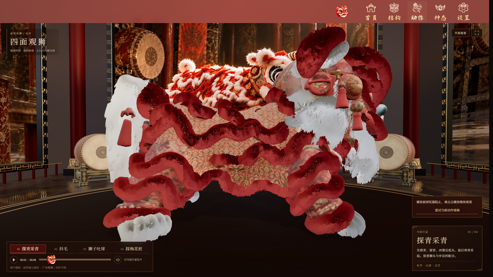
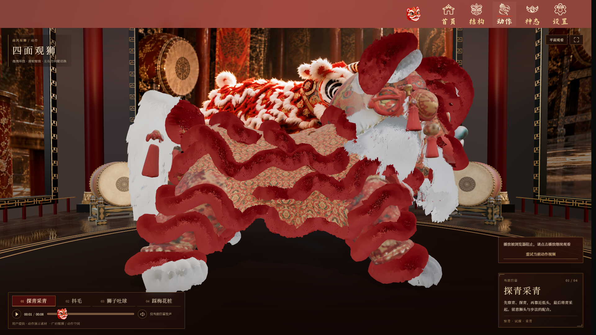
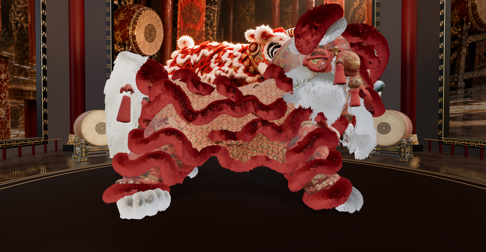
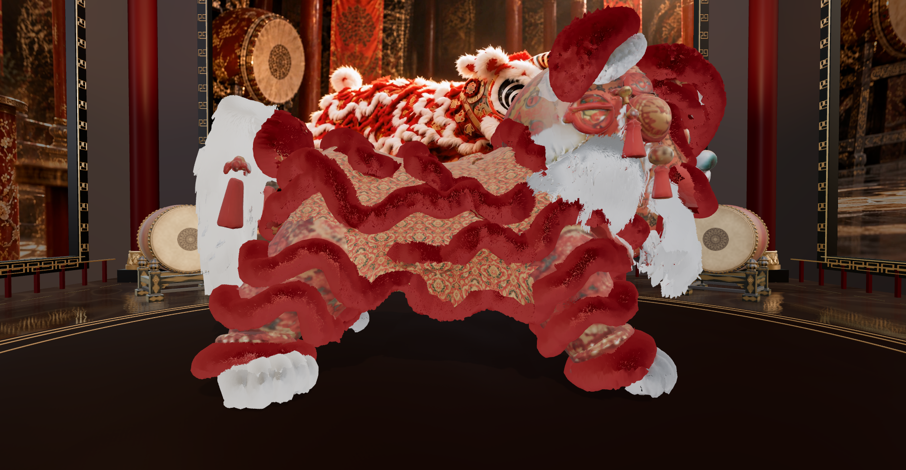
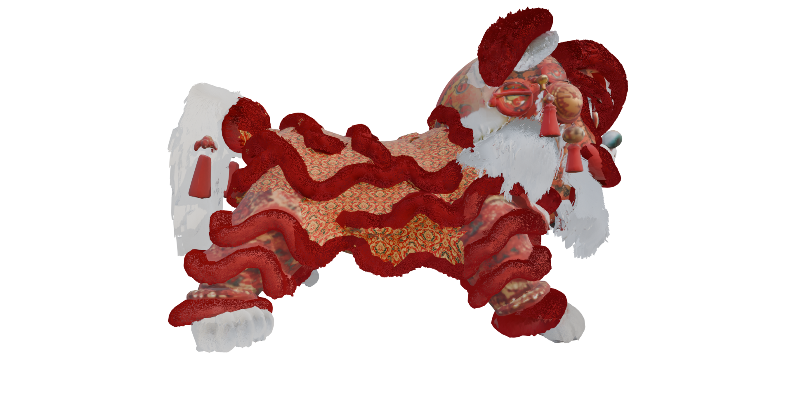

南风有狮 / 材质对照 · 2026.10.22
左侧为修改前，右侧为修改后。两张网页画面保持同一相机、姿态、forest 环境与灯光参数；原有造型、配色、毛发数据和动画保留。
同相机 · 同姿态 · 同 HDRI · 同灯光


以下通过 CSS 裁切原始画布像素，不调色、不修图。


观察红绒暗面是否保留层次，以及亮暗交界是否仍形成突兀黑带。
白尾沿用原生长毛束造型；观察束间层次，不将源模型的片状轮廓改造成另一种毛发。
同投影与模型姿态 · 原生 EEVEE · forest · AgX · 64 采样

原生材质与毛发作为基准。参考 PNG 保持渲染原字节。灰色仅是透明图像背后的 HTML 底色。
当前仍存在渲染差异。网页发丝采样、环境积分与原生 EEVEE 并非完全相同；本次改善明暗分布，不声称像素级一致。
也保留了结构页前后原图，可进一步检查浅色背景下的白毛层次。
对照资料：网页与 Blender 均为本地真实渲染；所有截图直接复制原 PNG，不使用 AI 修图。网页选区图用于限定比较范围，不能视为 Blender 原生材质分类。